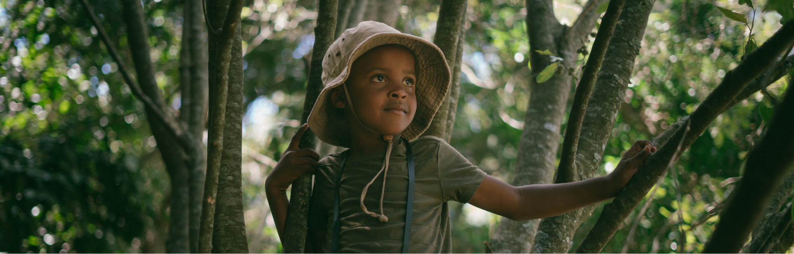
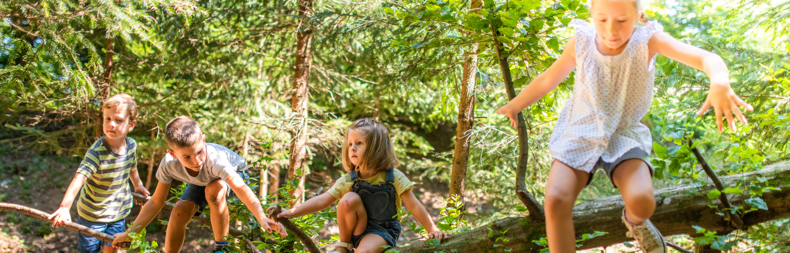
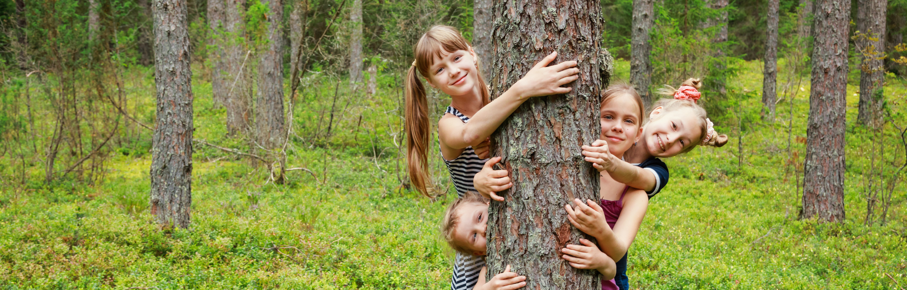

Kinder gehören nach draußen — das ist keine romantische Idee, sondern wissenschaftlich belegt. Waldpädagogik bringt Kinder dorthin zurück, wo echtes Lernen passiert: in die Natur. Und das Beste: Dafür braucht es weder einen eigenen Wald noch eine Sonderausrüstung.
nach Naturaufenthalten*
für gesunde Entwicklung
in der Natur angesprochen
die Natur liefert alles
* Quelle: Studien zur Naturtherapie und Stressregulation bei Kindern (u.a. University of Exeter, 2019)
Was ist Waldpädagogik — und was ist sie nicht?
Waldpädagogik bedeutet nicht, jeden Tag stundenlang durch den Wald zu wandern. Es geht um eine Haltung: Die Natur wird als Lernraum anerkannt und bewusst genutzt. Das kann der Stadtpark sein, der Kita-Garten, eine Wiese — oder eben der Wald.
… bewusstes Erleben der Natur mit allen Sinnen. Forschen, entdecken, ausprobieren. Die Natur als Lehrerin akzeptieren. Langsam sein dürfen. Regenwetter als Lernchance sehen.
… stundenlanges Wandern ohne Ziel. Kinder sich selbst überlassen. Ein teures Konzept mit Zertifikat. Nur etwas für Waldkindergärten. Oder wetterabhängig.

Warum Naturerfahrungen Kinder so stark machen
Die Forschung ist eindeutig: Kinder, die regelmäßig Zeit in der Natur verbringen, entwickeln sich in vielen Bereichen besser. Hier sind die wichtigsten Wirkungen:
- Konzentration & Aufmerksamkeit: Natur senkt das Stresslevel und ermöglicht echte Erholung des Gehirns — danach können Kinder besser fokussieren.
- Motorik & Koordination: Unebener Boden, Klettern, Balancieren — der Wald bietet Bewegungsreize, die kein Spielplatz bieten kann.
- Risikokompetenz: Kinder lernen, eigene Grenzen einzuschätzen — ein unverzichtbarer Baustein für Selbstvertrauen.
- Kreativität: Ein Ast ist ein Zauberstab, ein Stein ein Schatz, eine Pfütze ein Ozean. In der Natur wird Fantasie nicht begrenzt.
- Soziales Miteinander: Gemeinsam ein Lager bauen, Tiere beobachten, Pflanzen bestimmen — Natur verbindet.
- Umweltbewusstsein: Kinder, die Natur kennen und lieben, schützen sie später auch.
Schritt für Schritt: So startest du mit Waldpädagogik
Du musst kein Waldpädagogik-Zertifikat haben, um anzufangen. Wichtig ist die Haltung: offen sein, die Natur sprechen lassen und die Kinder führen lassen. So geht es:

10 konkrete Aktivitäten für die Praxis
Hier sind bewährte Ideen, die sofort funktionieren — für Gruppen jeder Altersstufe:
Mit Blättern, Blüten, Steinen und Zweigen kreisförmige Muster legen. Fördert Ästhetik, Geduld und Naturwahrnehmung. Am Ende fotografieren und loslassen.
Aus Ästen, Blättern und Steinen eine Hütte bauen. Kinder planen, bauen, lösen Probleme — und haben am Ende einen eigenen Rückzugsort. Teamarbeit pur.
Mit Lupen Rinde, Erde, Blätter und Insekten unter die Lupe nehmen. Staunen ist erlaubt und erwünscht. Ein Forscher-Heft macht aus dem Ausflug ein echtes Projekt.
Augen zu, mit der Nase durch den Wald führen lassen: Was riecht wie Erde? Wie Harz? Wie Regen? Schärft Sinne und Aufmerksamkeit auf wunderbare Weise.
Regen ist kein Grund zu bleiben! Pfützen, Rinnsale, das Geräusch von Tropfen — Regentage bieten einmalige Erlebnisse. Gummistiefel an und los.
Blätter, Blüten, Früchte sammeln und bestimmen. Mit einfachen Bestimmungsbüchern für Kinder werden Kinder zu echten Botanikerinnen. Wissen, was draußen wächst.
Spuren im Matsch, Federn, Haare, Fraßspuren an Blättern — die Natur ist voller Hinweise auf ihre Bewohner. Kinder werden zu Naturdetektiven.
Alle setzen sich, schließen die Augen und hören eine Minute lang zu. Wie viele Geräusche gibt es? Was hört man zuerst? Eine kraftvolle Übung für Achtsamkeit.
Mit Beeren, Erde, Gras und Blüten auf Papier oder Steine malen. Farben aus der Natur herstellen — ein Erlebnis, das Kinder nie vergessen.
Jedes Kind adoptiert einen Baum für das Jahr. Es besucht ihn regelmäßig und beobachtet die Veränderungen. Ein einfaches, tiefes Projekt über alle Jahreszeiten.
Waldpädagogik ohne Wald — geht das?
Ja — unbedingt! Viele Kitas haben keinen Wald in der Nähe. Das ist kein Hindernis. Jeder Outdoor-Raum bietet Naturerlebnisse, wenn man genau hinschaut:
| Verfügbarer Ort | Möglichkeiten | Besonders gut für |
|---|---|---|
| 🌳 Stadtpark | Bäume beobachten, Vögel bestimmen, Naturmandala, Hüttenbau mit Ästen | Alle Altersgruppen |
| 🌿 Kita-Garten | Pflanzen ziehen, Insekten beobachten, Matschbaustelle, Kräuterbeet | Kleine Kinder (2–4 J.) |
| 🌾 Wiese / Brachfläche | Insekten fangen und freilassen, Blumen bestimmen, Tierspuren suchen | Forschertypen |
| 🪨 Straßenrand / Pflaster | Moose, Flechten, Ameisen — auch hier lebt die Natur | Städtische Kitas |
| 🌲 Wald (Ausflug) | Hüttenbau, Stille erleben, Tiere beobachten, Pilze bestimmen | Größere Kinder (4–6 J.) |
Praktische Tipps für den Kita-Alltag
So wird Waldpädagogik zum festen Bestandteil
- Festen Naturtag einführen — einmal pro Woche, Wetter spielt keine Rolle.
- Eltern informieren und einbinden: Was haben die Kinder heute entdeckt?
- Forscher-Kiste packen: Lupen, Bestimmungsbücher, Skizzenpapier, Pinzette.
- Wetterfeste Kleidung als Grundausstattung — Gummistiefel und Regenjacke gehören dazu.
- Keine Agenda — das Ziel ist das Erleben, nicht das Ergebnis.
- Eigenes Naturtagebuch für jedes Kind: Zeichnungen, eingeklebte Blätter, Stempel aus Naturmaterialien.
- Jahreszeitenrundgang: Denselben Ort im Winter, Frühling, Sommer und Herbst besuchen — und Veränderungen dokumentieren.

Waldpädagogik ist keine Methode — sie ist eine Einladung, die Welt mit Kinderaugen zu sehen. Fang einfach an. Ein Stein, eine Lupe, eine Wiese. Das reicht.
Folge uns auf Instagram für mehr Praxisideen rund um Naturpädagogik und Kita-Alltag: